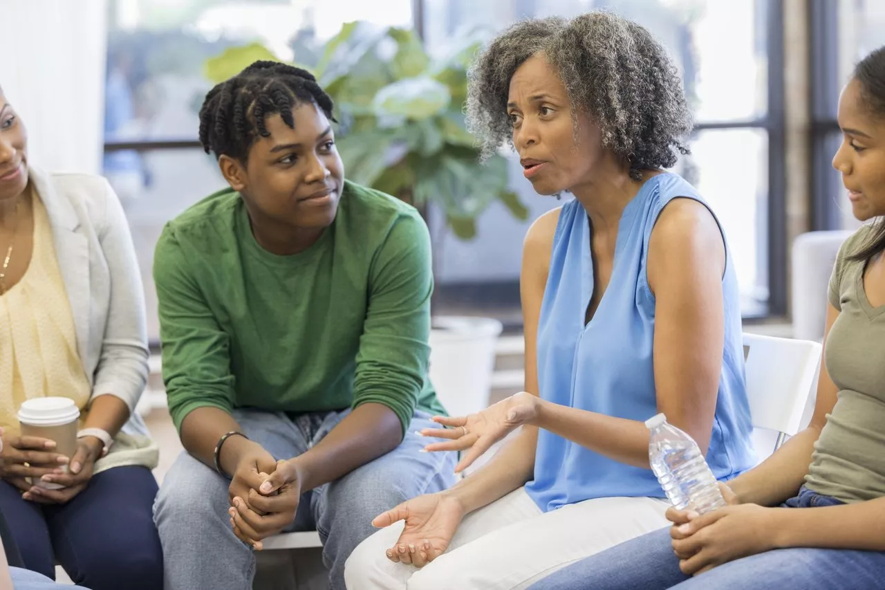

Psicólogos na escola
turma 113
Publicado em 10 de agosto de 2026

fonte da imagem: Nova Escola
A escola deve ser o local onde os adolescentes se sintam parte, podendo escolher entre atividades extracurriculares, como artes, dança, teatro, música, esportes, entre outras que melhorem o cognitivo e a saúde mental. A presença de psicólogos nas escolas brasileiras é essencial para promover um ambiente educacional saudável e inclusivo.
Para que isso ocorra a presença de psicólogos nas escolas brasileiras é essencial, tornando esse ambiente saudável e inclusivo.
Referências gerais consultadas:
- www.educamaisbrasil.com.br - acesso em 10/09/26
- Dias, A.C.G.; Patias; N.D; ABAID, J.L.W.
- Psicologia escolar e possibilidades na atuação de psicólogos:
algumas reflexões. Psicologia Escolar e Educacional.V.18, n.1,
p.105-111, jan.2014